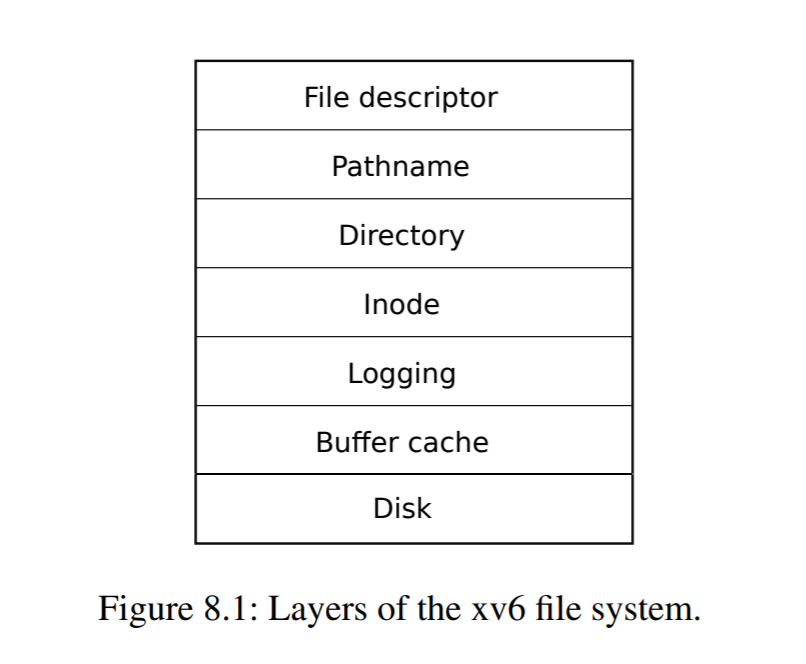
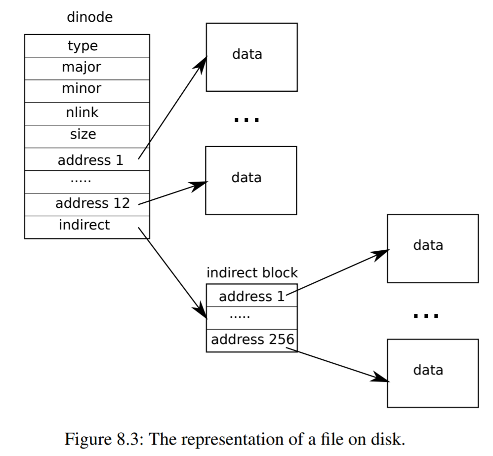

请实现文件系统，本实验中的文件系统遵循 xv6 的设计，你也可以从 0 开始设计属于你的文件系统。如果你的文件系统不同于 xv6 的话，请修改
user/src/mkfs。你需要添加测试证明你实现的文件系统可以读取到你打包的文件，在数量、内容上是正确的。

本图引自 xv6: a simple, Unix-like teaching operating system [1]。
文件系统的总体结构参考 Xv6 [2] 的设计，其 7 层结构如图所示。以下我们将自底向上依次进行阐述。
第 1 层是磁盘驱动，作为物理磁盘的抽象层，为操作系统提供了读写磁盘块的方法。我们已在 Lab 6 时在 kern/sd.c 中实现，详见 Lab 6 第 2 节。
在这一层中，我们提供了以下方法：
sd_init：初始化 SD 卡并解析主引导记录sd_intr：处理 SD 卡设备中断sd_rw：读写 SD 卡磁盘块第 2 层是磁盘块缓存，用于将磁盘块缓存到内存中，从而加快磁盘读写。我们已在 Lab 6 时在 kern/bio.c 中实现，详见 Lab 6 第 1 节。
在这一层中，我们提供了以下方法：
binit：初始化 buf 队列 bcachebread：从磁盘读取 buf 到内存bwrite：将 buf 从内存写入磁盘brelse：释放一个不在使用中的 bufbpin：将 buf 的引用数（refcnt）加 1，其中引用数表示当前正在等待此 buf 的设备数量bunpin：将 buf 的引用数（refcnt）减 1第 3 层是磁盘改动日志，用于维护文件系统的崩溃一致性（crash consistency），确保写磁盘的事务是原子（atomic）的。我们将在 kern/log.c 中实现。
在这一层中，我们提供了以下方法：
initlog：初始化 loglog_write：作为 bwrite 的代理，在 log 中记录需要被写入磁盘的 block 的标号，并标记为 dirty，之后统一写入begin_op：开始文件系统调用end_op：结束文件系统调用initlog函数 initlog 的主要工作是根据 super block 中的信息对 log 进行初始化，然后调用函数 recover_from_log，根据 log header 恢复崩溃前未写入到磁盘的数据。
// kern/log.c void initlog(int dev) { if (sizeof(struct logheader) >= BSIZE) panic("\tinitlog: logheader is too big.\n"); struct superblock sb; initlock(&log.lock, "log"); readsb(dev, &sb); log.start = sb.logstart; log.size = sb.nlog; log.dev = dev; recover_from_log(); cprintf("initlog: success.\n"); }
其中，super block 保存了磁盘的布局信息，详见注释：
// inc/fs.h /* * Disk layout: * [boot block | super block | log | inode blocks | free bit map | data blocks] * * mkfs computes the super block and builds an initial file system. * The super block describes the disk layout: */ struct superblock { uint32_t size; // Size of file system image (blocks) uint32_t nblocks; // Number of data blocks uint32_t ninodes; // Number of inodes uint32_t nlog; // Number of log blocks uint32_t logstart; // Block number of first log block uint32_t inodestart; // Block number of first inode block uint32_t bmapstart; // Block number of first free map block };
我们先调用函数 readsb 读取 super block。
// kern/fs.c /* * Read the super block. */ void readsb(int dev, struct superblock* sb) { struct buf* b = bread(dev, 1); memmove(sb, b->data, sizeof(*sb)); brelse(b); }
然后我们利用 super block 中的信息初始化 log，其中 log 的结构如下所示：
// kern/log.c /* * Contents of the header block, used for both the on-disk header block * and to keep track in memory of logged block # before commit. */ struct logheader { int n; int block[LOGSIZE]; }; struct log { struct spinlock lock; int start; int size; int outstanding; // How many FS sys calls are executing. int committing; // In commit(), please wait. int dev; struct logheader lh; } log;
这里 log header 保存的是已 commit 的 block 的标号。
log 初始化完毕后，我们调用函数 recover_from_log 进行磁盘的恢复工作，以维护磁盘的崩溃一致性。
函数 recover_from_log 首先调用函数 read_head 将磁盘中的 log header 读取到内存，然后调用函数 install_trans 根据 log header 将已 commit 的 block 写入到磁盘，最后清空内存中的 log header，并调用函数 write_head 清空磁盘中的 log header。
// kern/log.c static void recover_from_log() { read_head(); install_trans(); // if committed, copy from log to disk log.lh.n = 0; write_head(); // clear the log }
具体来说，函数 read_head 先读取磁盘中的 log header，并将其复制到内存中的 log 结构里。
// kern/log.c /* * Read the log header from disk into the in-memory log header. */ static void read_head() { struct buf* buf = bread(log.dev, log.start); struct logheader* lh = (struct logheader*)(buf->data); log.lh.n = lh->n; for (int i = 0; i < log.lh.n; ++i) log.lh.block[i] = lh->block[i]; brelse(buf); }
随后，函数 install_trans 根据 log header 中 block 的标号，将磁盘中已 commit 但还未写入到磁盘的 block 的内容复制到一个 buf 里，然后将它写入到磁盘。
// kern/log.c /* * Copy committed blocks from log to their home location. */ static void install_trans() { for (int i = 0; i < log.lh.n; ++i) { struct buf* log_buf = bread(log.dev, log.start + i + 1); struct buf* dst_buf = bread(log.dev, log.lh.block[i]); memmove(dst_buf->data, log_buf->data, BSIZE); brelse(log_buf); bwrite(dst_buf); brelse(dst_buf); } }
最后，将内存中的 log header 清空，并调用函数 write_head 将其写入到磁盘，从而将磁盘中的 log header 也清空。
// kern/log.c /* * Write in-memory log header to disk. * This is the true point at which the * current transaction commits. */ static void write_head() { struct buf* buf = bread(log.dev, log.start); struct logheader* lh = (struct logheader*)(buf->data); lh->n = log.lh.n; for (int i = 0; i < log.lh.n; ++i) lh->block[i] = log.lh.block[i]; bwrite(buf); brelse(buf); }
log_write函数 log_write 的主要工作是在内存中的 log header 里记录需要被写入磁盘的 block 的标号，并标记这个 block 对应的 buf 为 dirty，以固定在 bcache 中，不会因 LRU 算法被意外淘汰。这些 block 将在之后被统一连续写入磁盘，从而提高效率。
// kern/log.c /* * Caller has modified b->data and is done with the buffer. * Record the block number and pin in the cache with B_DIRTY. * commit() / write_log() will do the disk write. * * log_write() replaces bwrite(); a typical use is: * bp = bread(...) * modify bp->data[] * log_write(bp) * brelse(bp) */ void log_write(struct buf* b) { if (log.lh.n >= LOGSIZE || log.lh.n >= log.size - 1) panic("\tlog_write: transaction is too big.\n"); if (log.outstanding < 1) panic("\tlog_write: outside of transaction.\n"); acquire(&log.lock); int i = 0; for (; i < log.lh.n; ++i) { if (log.lh.block[i] == b->blockno) break; // log absorption } if (i == log.lh.n) { log.lh.block[i] = b->blockno; ++log.lh.n; } b->flags |= B_DIRTY; // prevent eviction release(&log.lock); }
这里引入了 absorption 的优化机制。当在一个事务中多次写入同一个 block 时，在 log header 中仅记录一次这个 block 的标号，从而节省 log header 的空间，并提高效率。
begin_op函数 begin_op 的主要工作是在事务开始前，等待 log 空闲（不处于正在 commit 的状态）且可用（log header 有足够的空间保存新的待写 block 的标号），然后才允许开始本次文件系统调用。
// kern/log.c /* * Called at the start of each FS system call. */ void begin_op() { acquire(&log.lock); while (1) { if (log.committing) { sleep(&log, &log.lock); } else if (log.lh.n + (log.outstanding + 1) * MAXOPBLOCKS > LOGSIZE) { // This op might exhaust log space; wait for commit. sleep(&log, &log.lock); } else { ++log.outstanding; release(&log.lock); break; } } }
end_op函数 end_op 的主要工作是在事务结束后，将 log header 中标记的 block 统一连续写入磁盘，并唤醒函数 begin_op 中等待 log 空闲且可用的文件系统调用。
// kern/log.c /* * Called at the end of each FS system call. * Commits if this was the last outstanding operation. */ void end_op() { int do_commit = 0; acquire(&log.lock); --log.outstanding; if (log.committing) panic("\tend_op: log is committing.\n"); if (!log.outstanding) { do_commit = 1; log.committing = 1; } else { // begin_op() may be waiting for log space, and decrementing // log.outstanding has decreased the amount of reserved space. wakeup(&log); } release(&log.lock); if (do_commit) { commit(); acquire(&log.lock); log.committing = 0; wakeup(&log); release(&log.lock); } }
具体来说，先判断当前事务是否已结束（即 outstanding 的系统调用数量为 0）。如果是，则调用函数 commit 进行写磁盘操作。
函数 commit 首先调用函数 write_log 将待 commit 的 block 写入到磁盘中 log 对应的位置，接着调用函数 write_head 将内存中的 log header 写入到磁盘，然后调用函数 install_trans 根据 log header 将已 commit 的 block 写入到磁盘，最后清空内存中的 log header，并调用函数 write_head 清空磁盘中的 log header。
// kern/log.c static void commit() { if (log.lh.n > 0) { write_log(); write_head(); install_trans(); log.lh.n = 0; write_head(); // erase the transaction from the log } }
具体来说，函数 write_log 根据 log header 中 block 的标号，将待 commit 的 block 写入到磁盘中 log 对应的位置。
// kern/log.c /* * Copy modified blocks from cache to log. */ static void write_log() { for (int i = 0; i < log.lh.n; ++i) { struct buf* log_buf = bread(log.dev, log.start + i + 1); struct buf* cache_buf = bread(log.dev, log.lh.block[i]); memmove(log_buf->data, cache_buf->data, BSIZE); brelse(cache_buf); bwrite(log_buf); brelse(log_buf); } }
随后，函数 write_head 将内存中的 log header 写入到磁盘，此时事务被 commit。
// kern/log.c /* * Write in-memory log header to disk. * This is the true point at which the * current transaction commits. */ static void write_head() { struct buf* buf = bread(log.dev, log.start); struct logheader* lh = (struct logheader*)(buf->data); lh->n = log.lh.n; for (int i = 0; i < log.lh.n; ++i) lh->block[i] = log.lh.block[i]; bwrite(buf); brelse(buf); }
之后的写磁盘过程同 1.3.1 节中函数 recover_from_log 的后半段。
第 4 层是索引节点（inode），包含了文件的元信息，用于描述文件系统对象。我们将在 kern/fs.c 中实现。
在这一层中，我们提供了以下方法：
iinit：初始化 inode 和 icacheialloc：分配一个 inodeiupdate：将内存中的 inode 写入到磁盘idup：将 inode 的引用数（ref）加 1，其中引用数表示当前内存中指向这个 inode 的指针数量ilock：给 inode 加锁，需要时从磁盘中读取 inodeiunlock：给 inode 解锁iput：当 inode 的引用数（ref）为 1 时，清空并释放该 inode，否则将其引用数减 1iunlockput：iunlock + iput 的别名stati：复制 inode 的元数据到 statreadi：从 inode 中读取数据writei：写入数据到 inodeiinit函数 iinit 的主要工作是初始化 icache 和 inode 的锁。
// kern/fs.c void iinit(int dev) { initlock(&icache.lock, "icache"); for (int i = 0; i < NINODE; ++i) initsleeplock(&icache.inode[i].lock, "inode"); readsb(dev, &sb); cprintf( "super block: size %d nblocks %d ninodes %d nlog %d logstart %d inodestart %d bmapstart %d\n", sb.size, sb.nblocks, sb.ninodes, sb.nlog, sb.logstart, sb.inodestart, sb.bmapstart); cprintf("iinit: success.\n"); }
其中，icache 的结构如下所示：
// kern/fs.c struct { struct spinlock lock; struct inode inode[NINODE]; } icache;
inode 的结构如下所示：

本图引自 xv6: a simple, Unix-like teaching operating system [1:1]。
// inc/file.h /* * In-memory copy of an inode. */ struct inode { uint32_t dev; // Device number uint32_t inum; // Inode number int ref; // Reference count struct sleeplock lock; // Protects everything below here int valid; // Inode has been read from disk? uint16_t type; // Copy of disk inode uint16_t major; uint16_t minor; uint16_t nlink; uint32_t size; uint32_t addrs[NDIRECT + 1]; };
ialloc函数 ialloc 的主要工作是在磁盘中找到一个未分配的 inode（type 为 0），然后将它的 type 设置为给定的文件类型，表示已分配，最后调用函数 iget，返回这个 inode 在内存中的拷贝。
// kern/fs.c /* * Allocate an inode on device dev. * * Mark it as allocated by giving it type type. * Returns an unlocked but allocated and referenced inode. */ struct inode* ialloc(uint32_t dev, uint16_t type) { for (int inum = 1; inum < sb.ninodes; ++inum) { struct buf* bp = bread(dev, IBLOCK(inum, sb)); struct dinode* dip = (struct dinode*)bp->data + inum % IPB; if (!dip->type) { // a free inode memset(dip, 0, sizeof(*dip)); dip->type = type; log_write(bp); // mark it allocated on the disk brelse(bp); return iget(dev, inum); } brelse(bp); } panic("\tialloc: no inodes.\n"); return 0; }
其中，函数 iget 先在 icache 中根据标号（inum）寻找对应的 inode。如果找到，则将其引用数（ref）加 1 并返回，否则在 icache 中回收一个空闲的 cache entry 给这个 inode，将其引用数（ref）设置为 1 并返回。
// kern/fs.c /* * Find the inode with number inum on device dev * and return the in-memory copy. Does not lock * the inode and does not read it from disk. */ static struct inode* iget(uint32_t dev, uint32_t inum) { acquire(&icache.lock); // Is the inode already cached? struct inode* empty = NULL; for (int i = 0; i < NINODE; ++i) { struct inode* ip = &icache.inode[i]; if (ip->ref > 0 && ip->dev == dev && ip->inum == inum) { ip->ref++; release(&icache.lock); return ip; } if (!empty && !ip->ref) empty = ip; // remember empty slot } // Recycle an inode cache entry. if (!empty) panic("\tiget: no inodes.\n"); struct inode* ip = empty; ip->dev = dev; ip->inum = inum; ip->ref = 1; ip->valid = 0; release(&icache.lock); return ip; }
iupdate函数 iupdate 的主要工作是将内存中的 inode 写入到磁盘。由于我们的 icache 采用直写（write-through）模式，因此每当 inode 有字段被修改，就需要调用一次函数 iupdate 进行写回操作。
// kern/fs.c /* * Copy a modified in-memory inode to disk. * * Must be called after every change to an ip->xxx field * that lives on disk, since i-node cache is write-through. * Caller must hold ip->lock. */ void iupdate(struct inode* ip) { struct buf* bp = bread(ip->dev, IBLOCK(ip->inum, sb)); struct dinode* dip = (struct dinode*)bp->data + ip->inum % IPB; dip->type = ip->type; dip->major = ip->major; dip->minor = ip->minor; dip->nlink = ip->nlink; dip->size = ip->size; memmove(dip->addrs, ip->addrs, sizeof(ip->addrs)); log_write(bp); brelse(bp); }
idup函数 idup 的主要工作是将 inode 的引用数（ref）加 1，其中引用数表示当前内存中指向这个 inode 的指针数量。
// kern/fs.c /* * Increment reference count for ip. * Returns ip to enable ip = idup(ip1) idiom. */ struct inode* idup(struct inode* ip) { acquire(&icache.lock); ip->ref++; release(&icache.lock); return ip; }
ilock函数 ilock 的主要工作是给指定的 inode 加锁。如果当前 inode 不在内存中（即 valid 为 0），则从磁盘中读取，并将 valid 设置为 1。
// kern/fs.c /* * Lock the given inode. * Reads the inode from disk if necessary. */ void ilock(struct inode* ip) { if (!ip || ip->ref < 1) panic("\tilock: invalid inode.\n"); acquiresleep(&ip->lock); if (!ip->valid) { struct buf* bp = bread(ip->dev, IBLOCK(ip->inum, sb)); struct dinode* dip = (struct dinode*)bp->data + ip->inum % IPB; ip->type = dip->type; if (!ip->type) { brelse(bp); panic("\tilock: no type.\n"); } ip->major = dip->major; ip->minor = dip->minor; ip->nlink = dip->nlink; ip->size = dip->size; memmove(ip->addrs, dip->addrs, sizeof(ip->addrs)); ip->valid = 1; brelse(bp); } }
iunlock函数 iunlock 的主要工作是给指定的 inode 解锁。
// kern/fs.c /* * Unlock the given inode. */ void iunlock(struct inode* ip) { if (!ip || !holdingsleep(&ip->lock) || ip->ref < 1) panic("\tiunlock: invalid inode.\n"); releasesleep(&ip->lock); }
iput函数 iput 的主要工作是当 inode 的引用数（ref）为 1 时，调用函数 itrunc 清空并释放该 inode 的内容，然后调用函数 iupdate 更新磁盘中的 inode；否则将其引用数减 1。
// kern/fs.c /* * Drop a reference to an in-memory inode. * * If that was the last reference, the inode cache entry can * be recycled. * If that was the last reference and the inode has no links * to it, free the inode (and its content) on disk. * All calls to iput() must be inside a transaction in * case it has to free the inode. */ void iput(struct inode* ip) { acquire(&icache.lock); if (ip->ref == 1 && ip->valid && !ip->nlink) { // ip->ref == 1 means no other process can have ip locked, // so this acquiresleep() won't block (or deadlock). acquiresleep(&ip->lock); release(&icache.lock); // inode has no links and no other references: truncate and free. itrunc(ip); ip->type = 0; iupdate(ip); ip->valid = 0; releasesleep(&ip->lock); acquire(&icache.lock); } ip->ref--; release(&icache.lock); }
这里函数 itrunc 用于清空 inode 的内容，包括 NDIRECT 个直接索引磁盘块（direct block）和 NINDIRECT 个间接索引磁盘块（indirect block）。
// kern/fs.c /* * Truncate inode (discard contents). * * Only called when the inode has no links * to it (no directory entries referring to it) * and has no in-memory reference to it (is * not an open file or current directory). */ static void itrunc(struct inode* ip) { for (int i = 0; i < NDIRECT; ++i) { if (ip->addrs[i]) { bfree(ip->dev, ip->addrs[i]); ip->addrs[i] = 0; } } if (ip->addrs[NDIRECT]) { struct buf* bp = bread(ip->dev, ip->addrs[NDIRECT]); uint32_t* a = (uint32_t*)bp->data; for (int j = 0; j < NINDIRECT; ++j) { if (a[j]) bfree(ip->dev, a[j]); } brelse(bp); bfree(ip->dev, ip->addrs[NDIRECT]); ip->addrs[NDIRECT] = 0; } ip->size = 0; iupdate(ip); }
其中，函数 bfree 用于释放一个 block，将其在 bitmap 中标记为未使用。
// kern/fs.c /* * Free a disk block. */ static void bfree(int dev, uint32_t b) { struct buf* bp = bread(dev, BBLOCK(b, sb)); int bi = b % BPB; int m = 1 << (bi % 8); if (!(bp->data[bi / 8] & m)) panic("\tbfree: freeing a free block.\n"); bp->data[bi / 8] &= ~m; log_write(bp); brelse(bp); }
iunlockput函数 iunlockput 是 iunlock + iput 的别名。
// kern/fs.c /* * Common idiom: unlock, then put. */ void iunlockput(struct inode* ip) { iunlock(ip); iput(ip); }
stati函数 stati 的主要工作是复制 inode 的元数据（metadata）到 stat 结构，届时用户程序可以通过 stat 系统调用读取。
// kern/fs.c /* * Copy stat information from inode. * Caller must hold ip->lock. */ void stati(struct inode* ip, struct stat* st) { // FIXME: Support other fields in stat. st->st_dev = ip->dev; st->st_ino = ip->inum; st->st_nlink = ip->nlink; st->st_size = ip->size; switch (ip->type) { case T_FILE: st->st_mode = S_IFREG; break; case T_DIR: st->st_mode = S_IFDIR; break; case T_DEV: st->st_mode = 0; break; default: panic("\tstati: unexpected stat type %d.\n", ip->type); } }
readi函数 readi 的主要工作是从 inode 中读取数据。具体来说，先确保数据的读取范围在文件内，然后利用函数 bmap 定位文件中 block 的地址并读取到 buf，接着将数据从 buf 复制到目标地址 dst，最后返回成功读取的 block 数量。
// kern/fs.c /* * Read data from inode. * Caller must hold ip->lock. */ ssize_t readi(struct inode* ip, char* dst, size_t off, size_t n) { if (ip->type == T_DEV) { if (ip->major < 0 || ip->major >= NDEV || !devsw[ip->major].read) return -1; return devsw[ip->major].read(ip, dst, n); } if (off > ip->size || off + n < off) return -1; if (off + n > ip->size) n = ip->size - off; for (size_t tot = 0, m = 0; tot < n; tot += m, off += m, dst += m) { struct buf* bp = bread(ip->dev, bmap(ip, off / BSIZE)); m = min(n - tot, BSIZE - off % BSIZE); memmove(dst, bp->data + off % BSIZE, m); brelse(bp); } return n; }
这里函数 bmap 根据 block 的标号找到其对应的地址并返回，其中 direct block 的地址位于数组 ip->addrs 中，indirect block 的地址位于 ip->addrs[NDIRECT] 指向的 block 所保存的数组中。如果发现找不到对应的 block，则调用函数 balloc 分配一个新的 block。
// kern/fs.c /* * Inode content * * The content (data) associated with each inode is stored * in blocks on the disk. The first NDIRECT block numbers * are listed in ip->addrs[]. The next NINDIRECT blocks are * listed in block ip->addrs[NDIRECT]. * * Return the disk block address of the nth block in inode ip. * If there is no such block, bmap allocates one. */ static uint32_t bmap(struct inode* ip, uint32_t bn) { if (bn < NDIRECT) { // Load direct block, allocating if necessary. uint32_t addr = ip->addrs[bn]; if (!addr) ip->addrs[bn] = addr = balloc(ip->dev); return addr; } bn -= NDIRECT; if (bn < NINDIRECT) { // Load indirect block, allocating if necessary. uint32_t addr = ip->addrs[NDIRECT]; if (!addr) ip->addrs[NDIRECT] = addr = balloc(ip->dev); struct buf* bp = bread(ip->dev, addr); uint32_t* a = (uint32_t*)bp->data; addr = a[bn]; if (!addr) { a[bn] = addr = balloc(ip->dev); log_write(bp); } brelse(bp); return addr; } panic("\tbmap: out of range.\n"); return 0; }
其中，函数 balloc 根据 block 在 bitmap 中所对应的位，遍历所有 block 找到一个可用的 block，将其在 bitmap 中标记为使用中，并调用函数 bzero 清空此 block。
// kern/fs.c /* * Allocate a zeroed disk block. */ static uint32_t balloc(uint32_t dev) { for (int b = 0; b < sb.size; b += BPB) { struct buf* bp = bread(dev, BBLOCK(b, sb)); for (int bi = 0; bi < BPB && b + bi < sb.size; ++bi) { int m = 1 << (bi % 8); if (!(bp->data[bi / 8] & m)) { // Is block free? bp->data[bi / 8] |= m; // Mark block in use. log_write(bp); brelse(bp); bzero(dev, b + bi); return b + bi; } } brelse(bp); } panic("\tballoc: out of blocks.\n"); return 0; }
函数 bzero 用于清空一个 block。
// kern/fs.c /* * Zero a block. */ static void bzero(int dev, int bno) { struct buf* b = bread(dev, bno); memset(b->data, 0, BSIZE); log_write(b); brelse(b); }
writei函数 writei 的主要工作是写入数据到 inode。具体来说，先确保数据的写入起始地址在文件内，且写入结束地址不超过最大文件大小 MAXFILE * BSIZE，然后利用函数 bmap 定位文件中 block 的地址并读取到 buf，接着将数据从源地址 src 复制到 buf，并调用函数 log_write 加入写磁盘队列，最后返回成功写入的 block 数量。其中，如果写入的 block 数量超过文件大小，文件将自动扩容，最后需要更新此文件的大小，并调用函数 iupdate 写入到磁盘。
// kern/fs.c /* * Write data to inode. * Caller must hold ip->lock. */ ssize_t writei(struct inode* ip, char* src, size_t off, size_t n) { if (ip->type == T_DEV) { if (ip->major < 0 || ip->major >= NDEV || !devsw[ip->major].write) return -1; return devsw[ip->major].write(ip, src, n); } if (off > ip->size || off + n < off) return -1; if (off + n > MAXFILE * BSIZE) return -1; for (size_t tot = 0, m = 0; tot < n; tot += m, off += m, src += m) { struct buf* bp = bread(ip->dev, bmap(ip, off / BSIZE)); m = min(n - tot, BSIZE - off % BSIZE); memmove(bp->data + off % BSIZE, src, m); log_write(bp); brelse(bp); } if (n > 0 && off > ip->size) { ip->size = off; iupdate(ip); } return n; }
第 5 层是目录，用于组织文件系统的层次结构（hierarchy）。助教已在 kern/fs.c 中实现，由于时间有限，这里就不详细阐述了。
在这一层中，我们提供了以下方法：
namecmp：按字典序比较两个目录名的大小dirlookup：在一个目录下查找指定名称的文件夹dirlink：在一个目录下新建指定名称的文件夹第 6 层是路径，用于以字符串表示一个文件或文件夹在文件系统中的位置。助教已在 kern/fs.c 中实现，由于时间有限，这里就不详细阐述了。
在这一层中，我们提供了以下方法：
namei：查找指定路径的文件或文件夹nameiparent：查找指定路径的父文件夹第 7 层是文件描述符，以非负整数的形式，表示一个已打开文件（或管道、socket 等，一切皆文件！）的引用。内核为每个进程维护了一个进程级文件表（file table），同时在全局维护了一个系统级文件表（global file table，或 ftable），包含了所有打开的文件，文件描述符实际就是这个表的索引。我们将在 kern/file.c 中实现。由于时间有限，我们目前仅支持普通文件。
在这一层中，我们提供了以下方法：
file_init：初始化 ftablefile_alloc：分配一个新文件file_dup：将文件的引用数（ref）加 1file_close：将文件的引用数（ref）减 1，当引用数降到 0 时关闭文件file_stat：读取文件的元数据file_read：从文件读取数据file_write：写入数据到文件file_init函数 file_init 的主要工作是初始化 ftable 的锁。
// kern/file.c void file_init() { initlock(&ftable.lock, "ftable"); }
其中，ftable 的结构如下所示：
// kern/file.c struct { struct spinlock lock; struct file file[NFILE]; } ftable;
file 的结构如下所示：
// inc/file.h struct file { enum { FD_NONE, FD_PIPE, FD_INODE } type; int ref; char readable; char writable; struct pipe* pipe; struct inode* ip; size_t off; };
file_alloc函数 file_alloc 的主要工作是在 ftable 中找到一个未使用的文件（ref 为 0），然后将它标记为使用中并返回。
// kern/file.c /* * Allocate a file structure. */ struct file* file_alloc() { acquire(&ftable.lock); for (struct file* f = ftable.file; f < ftable.file + NFILE; ++f) { if (!f->ref) { f->ref = 1; release(&ftable.lock); return f; } } release(&ftable.lock); return NULL; }
file_dup函数 file_dup 的主要工作是将文件的引用数（ref）加 1，表示创建一个此文件的引用拷贝。
// kern/file.c /* * Increment ref count for file f. */ struct file* file_dup(struct file* f) { acquire(&ftable.lock); if (f->ref < 1) panic("\tfile_dup: invalid file.\n"); f->ref++; release(&ftable.lock); return f; }
file_close函数 file_close 的主要工作是将文件的引用数（ref）减 1；当引用数降到 0 时，对于普通文件，调用函数 iput 关闭文件（暂不支持其他文件类型）。
// kern/file.c /* * Close file f. (Decrement ref count, close when reaches 0.) */ void file_close(struct file* f) { acquire(&ftable.lock); if (f->ref < 1) panic("\tfile_close: invalid file.\n"); if (--f->ref > 0) { release(&ftable.lock); return; } struct file ff = *f; f->ref = 0; f->type = FD_NONE; release(&ftable.lock); if (ff.type == FD_INODE) { begin_op(); iput(ff.ip); end_op(); } else { panic("\tfile_close: unsupported type.\n"); } }
file_stat函数 file_stat 的主要工作是调用函数 stati 读取文件的元数据。
// kern/file.c /* * Get metadata about file f. */ int file_stat(struct file* f, struct stat* st) { if (f->type == FD_INODE) { ilock(f->ip); stati(f->ip, st); iunlock(f->ip); return 0; } return -1; }
file_read函数 file_read 的主要工作是对于普通文件，调用函数 readi 从文件中读取数据（暂不支持其他文件类型）。
// kern/file.c /* * Read from file f. */ ssize_t file_read(struct file* f, char* addr, ssize_t n) { if (!f->readable) return -1; if (f->type == FD_INODE) { ilock(f->ip); int r = readi(f->ip, addr, f->off, n); if (r > 0) f->off += r; iunlock(f->ip); return r; } panic("\tfile_read: unsupported type.\n"); return 0; }
file_write函数 file_write 的主要工作是对于普通文件，调用函数 writei 写入数据到文件（暂不支持其他文件类型）。
// kern/file.c /* * Write to file f. */ ssize_t file_write(struct file* f, char* addr, ssize_t n) { if (!f->writable) return -1; if (f->type == FD_INODE) { // Write a few blocks at a time to avoid exceeding the maximum log // transaction size, including i-node, indirect block, allocation // blocks, and 2 blocks of slop for non-aligned writes. This really // belongs lower down, since writei() might be writing a device like the // console. int max = ((MAXOPBLOCKS - 4) / 2) * 512; int i = 0; while (i < n) { int n1 = n - i; if (n1 > max) n1 = max; begin_op(); ilock(f->ip); int r = writei(f->ip, addr + i, f->off, n1); if (r > 0) f->off += r; iunlock(f->ip); end_op(); if (r < 0) break; if (r != n1) panic("\tfile_write: partial data written.\n"); i += r; } return i == n ? n : -1; } panic("\tfile_write: unsupported type.\n"); return 0; }
请修改
syscall.c以及trapasm.S来接上 musl，或者修改 Makefile 并搬运 xv6 的简易 libc，从而允许用户态程序通过调用系统调用来操作文件系统。
接上 musl 后，我们对系统调用的细节进行了一些修改。以下我们将以初始化程序 user/initcode.S 为例，简单梳理一下用户程序进行系统调用的全过程。
initcode.S这里我们引入了 musl 的 syscall.h，其中包含了 libc 中所有系统调用所对应的 system call number 的定义，例如系统调用 sys_exec 对应的 system call number 就是 SYS_execve（其值为 221）。
对于 AArch64 架构来说，发起系统调用时，用户程序先将参数地址保存到通用寄存器 X0 ~ X5 里，再将系统调用对应的 system call number 保存到寄存器 X8 里，最后通过 svc 指令陷入内核态。
// user/initcode.S
# exec(init, argv)
start:
ldr x0, =init
ldr x1, =argv
mov x8, #SYS_execve
svc 0x00
# char init[] = "/init\0";
init:
.string "/init\0"
# char *argv[] = { init, 0 };
.p2align 4
argv:
.word init
.word 0
.word 0
.word 0
trapasm.S陷入内核态前，需要先构建 trapframe 结构。这里我们在原有寄存器的基础上，新增了 musl 需要用到的两个寄存器 Q0 和 TPIDR_EL0。
// kern/trapasm.S
/* Save Q0 and TPIDR_EL0 to placate musl. */
str q0, [sp, #-16]!
mrs x4, tpidr_el0
stp xzr, x4, [sp, #-16]!
其中，零寄存器 xzr 用于填充空位，以保持 16 bytes 对齐。
新的 trapframe 结构如下所示：
// inc/trap.h struct trapframe { // Additional registers used to support musl uint64_t _padding; // for 16-byte aligned uint64_t tpidr_el0; __uint128_t q0; // Special Registers uint64_t sp_el0; // Stack Pointer uint64_t spsr_el1; // Program Status Register uint64_t elr_el1; // Exception Link Register // General-Purpose Registers uint64_t x0; uint64_t x1; uint64_t x2; uint64_t x3; uint64_t x4; uint64_t x5; uint64_t x6; uint64_t x7; uint64_t x8; uint64_t x9; uint64_t x10; uint64_t x11; uint64_t x12; uint64_t x13; uint64_t x14; uint64_t x15; uint64_t x16; uint64_t x17; uint64_t x18; uint64_t x19; uint64_t x20; uint64_t x21; uint64_t x22; uint64_t x23; uint64_t x24; uint64_t x25; uint64_t x26; uint64_t x27; uint64_t x28; uint64_t x29; // Frame Pointer uint64_t x30; // Procedure Link Register };
trap.c随后跳转到函数 trap 入口。在函数 trap 中，我们根据寄存器 ESR (Exception Syndrome Register) 判断当前为系统调用，随后调用函数 syscall1，传入 trapframe，并将返回值保存在 trapframe 的寄存器 X0 中。
// kern/trap.c void trap(struct trapframe* tf) { int ec = resr() >> EC_SHIFT, iss = resr() & ISS_MASK; lesr(0); // Clear esr. switch (ec) { case EC_UNKNOWN: interrupt(tf); break; case EC_SVC64: if (!iss) { /* Jump to syscall to handle the system call from user process */ tf->x0 = syscall1(tf); } else { cprintf("trap: unexpected svc iss 0x%x\n", iss); } break; default: panic("\ttrap: unexpected irq.\n"); } }
syscall.c我们根据之前保存在寄存器 X8 的值，可以得到当前的 system call number。随后利用函数指针表 syscalls，即可进行相应的系统调用。
// kern/syscall.c int syscall1(struct trapframe* tf) { struct proc* p = thisproc(); p->tf = tf; uint64_t sysno = tf->x8; if (sysno >= 0 && sysno < ARRAY_SIZE(syscalls) && syscalls[sysno]) { cprintf("syscall: syscall %d from proc %d\n", sysno, p->pid); tf->x0 = syscalls[sysno](); return tf->x0; } else { cprintf("syscall: unknown syscall %d from proc %d\n", sysno, p->pid); while (1) {} return -1; } return 0; }
函数指针表 syscalls 包含了我们目前已实现的所有系统调用：
// inc/types.h typedef int (*func)();
// kern/syscall.c static func syscalls[] = { [SYS_set_tid_address] = sys_gettid, [SYS_gettid] = sys_gettid, [SYS_ioctl] = sys_ioctl, [SYS_rt_sigprocmask] = sys_rt_sigprocmask, [SYS_brk] = (func)sys_brk, [SYS_execve] = sys_exec, [SYS_sched_yield] = sys_yield, [SYS_clone] = sys_clone, [SYS_wait4] = sys_wait4, // FIXME: exit_group should kill every thread in the current thread group. [SYS_exit_group] = sys_exit, [SYS_exit] = sys_exit, [SYS_dup] = sys_dup, [SYS_chdir] = sys_chdir, [SYS_fstat] = sys_fstat, [SYS_newfstatat] = sys_fstatat, [SYS_mkdirat] = sys_mkdirat, [SYS_mknodat] = sys_mknodat, [SYS_openat] = sys_openat, [SYS_writev] = (func)sys_writev, [SYS_read] = (func)sys_read, [SYS_close] = sys_close, };
由于时间有限，这些系统调用的功能和具体实现这里就不细讲了。函数定义的位置可以参见 syscall1.h 的注释。
// inc/syscall1.h // kern/syscall1.c int sys_gettid(); int sys_ioctl(); int sys_rt_sigprocmask(); // kern/sysproc.c int sys_exec(); int sys_yield(); size_t sys_brk(); int sys_clone(); int sys_wait4(); int sys_exit(); // kern/sysfile.c int sys_dup(); ssize_t sys_read(); ssize_t sys_write(); ssize_t sys_writev(); int sys_close(); int sys_fstat(); int sys_fstatat(); int sys_openat(); int sys_mkdirat(); int sys_mknodat(); int sys_chdir();
至此，用户程序就完成了一次系统调用。
我们已经把 xv6 的 shell 搬运到了
user/src/sh目录下，但需要实现 brk 系统调用来使用 malloc，你也可以自行实现一个简单的 shell。请在user/src/cat中实现 cat 命令并在你的 shell 中执行。
cat我们引用了 3 个头文件，分别用于：
fcntl.h：打开和关闭文件，对应函数 open 和 closestdio.h：输出文本到终端，对应函数 printfunistd.h：各种系统调用，包括函数 read, write, _exitcat 命令的实质就是从一个文件读取数据，然后写入到另一个文件（默认为终端）。至于文件类型是管道、终端还是普通文件，我们并不关心，因为系统调用的底层已经针对不同的文件类型进行了相应的处理。cat 命令的完整实现如下 [2:1]：
// user/src/cat/main.c #include <fcntl.h> #include <stdio.h> #include <unistd.h> char buf[512]; void cat(int fd) { int n = read(fd, buf, sizeof(buf)); while (n > 0) { if (write(1, buf, n) != n) { printf("cat: write error.\n"); return; } } if (n < 0) { printf("cat: read error.\n"); return; } } int main(int argc, char* argv[]) { if (argc <= 1) _exit(-1); for (int i = 1; i < argc; ++i) { int fd = open(argv[i], 0); if (fd < 0) { printf("cat: cannot open %s.\n", argv[i]); _exit(-1); } cat(fd); close(fd); } _exit(0); }
遗憾的是，由于时间有限，代码虽然已全部完成（包括所有系统调用，以及函数 fork, wait, execve 等），但尚未调通。目前系统可以成功进行到初始化程序 initcode.S 完成系统调用，但暂时还不能启动 shell，故障原因仍在排查中。
> make > make qemu
console_init: success.
main: [CPU 3] init started.
alloc_init: success.
proc_init: success.
irq_init: success.
timer_init: success at CPU 3.
file_init: success.
binit: success.
- mbox write: 0x7ccc8
- mbox read: 0x7ccc8
- clock rate: 50000000
- SD base clock rate from mailbox: 50000000
- Reset the card.
- Divisor selected = 104, shift count = 6
- EMMC: Set clock, status 0x1ff0000 CONTROL1: 0xe6807
- Send IX_GO_IDLE_STATE command.
- Send command response: 0
- EMMC: Sending ACMD41 SEND_OP_COND status 1ff0000
- Divisor selected = 2, shift count = 0
- EMMC: Set clock, status 0x1ff0000 CONTROL1: 0xe0207
- EMMC: SD Card Type 2 SC 128Mb UHS-I 0 mfr 170 'XY:QEMU!' r0.1 2/2006, #deadbeef RCA 4567
sd_init: Partition 1: 00 20 21 00 0c 49 01 08 00 08 00 00 00 00 02 00
- Status: 0
- CHS address of first absolute sector: head=32, sector=33, cylinder=0
- Partition type: 12
- CHS address of last absolute sector: head=73, sector=1, cylinder=8
- LBA of first absolute sector: 0x800
- Number of sectors: 131072
sd_init: Partition 2: 00 49 02 08 83 51 01 10 00 08 02 00 00 f8 01 00
- Status: 0
- CHS address of first absolute sector: head=73, sector=2, cylinder=8
- Partition type: 131
- CHS address of last absolute sector: head=81, sector=1, cylinder=16
- LBA of first absolute sector: 0x20800
- Number of sectors: 129024
sd_init: Partition 3: 00 00 00 00 00 00 00 00 00 00 00 00 00 00 00 00
- Status: 0
- CHS address of first absolute sector: head=0, sector=0, cylinder=0
- Partition type: 0
- CHS address of last absolute sector: head=0, sector=0, cylinder=0
- LBA of first absolute sector: 0x0
- Number of sectors: 0
sd_init: Partition 4: 00 00 00 00 00 00 00 00 00 00 00 00 00 00 00 00
- Status: 0
- CHS address of first absolute sector: head=0, sector=0, cylinder=0
- Partition type: 0
- CHS address of last absolute sector: head=0, sector=0, cylinder=0
- LBA of first absolute sector: 0x0
- Number of sectors: 0
sd_init: Boot signature: 55 aa
sd_init: success.
proc_alloc: proc 1 success.
user_init: proc 1 (initproc) success.
main: [CPU 3] init success.
main: [CPU 0] init started.
timer_init: success at CPU 0.
main: [CPU 2] init started.
timer_init: success at CPU 2.
main: [CPU 1] init started.
main: [CPU 0] init success.
main: [CPU 2] init success.
timer_init: success at CPU 1.
bget: dev 1 blockno 133121
main: [CPU 1] init success.
super block: size 1000 nblocks 941 ninodes 200 nlog 30 logstart 2 inodestart 32 bmapstart 58
iinit: success.
bget: dev 1 blockno 133121
bget: dev 1 blockno 133122
bget: dev 1 blockno 133122
initlog: success.
syscall: syscall 221 from proc 1
sys_exec: exec '' uargv 0
sys_exec: failed to fetch argument.